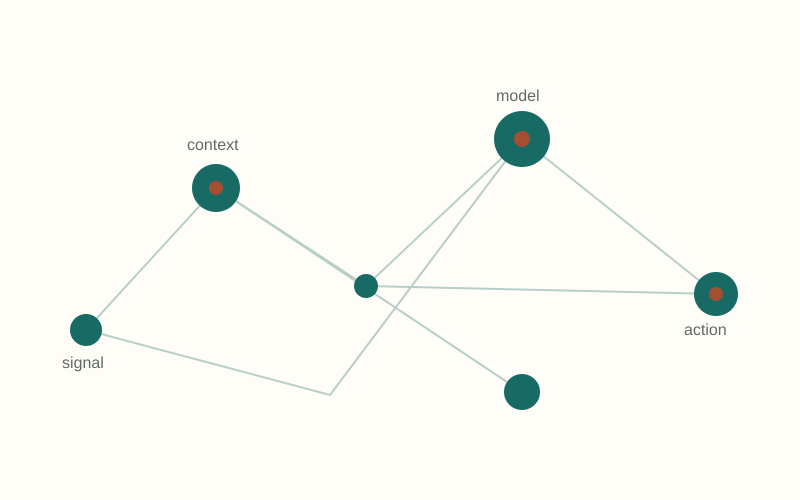

Learning from context
Models that understand situated behavior
Developing methods that combine behavioral signals with social context to produce more robust and interpretable predictions.
Representation learning · Network analysis · Mixed methods
Explore this project →